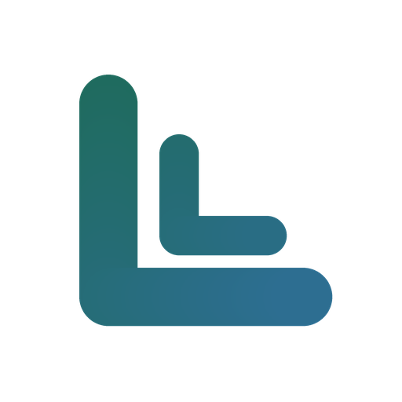
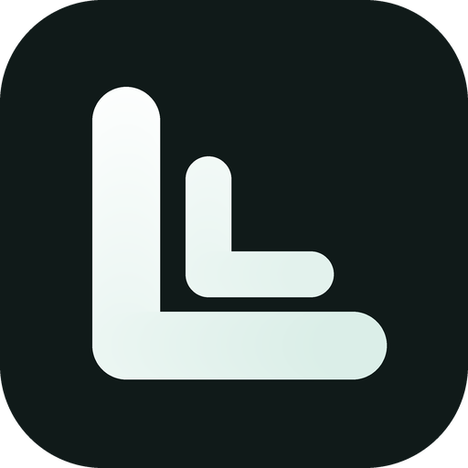
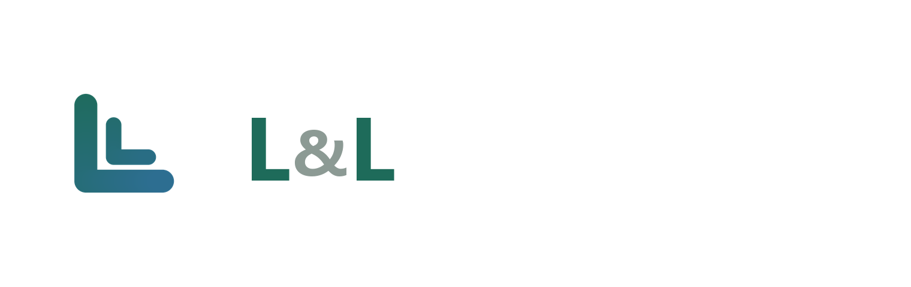
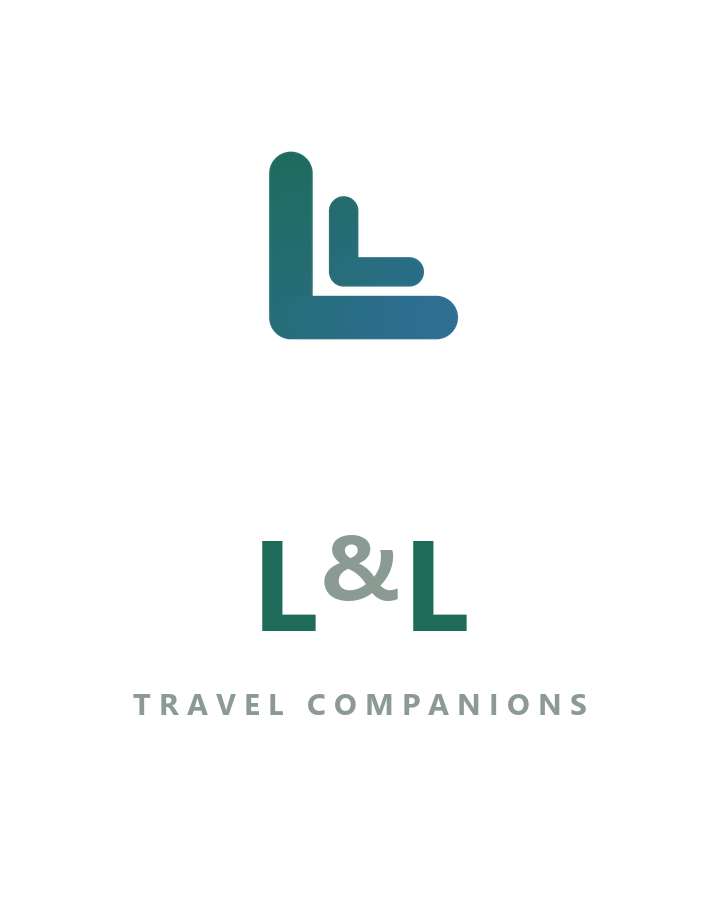
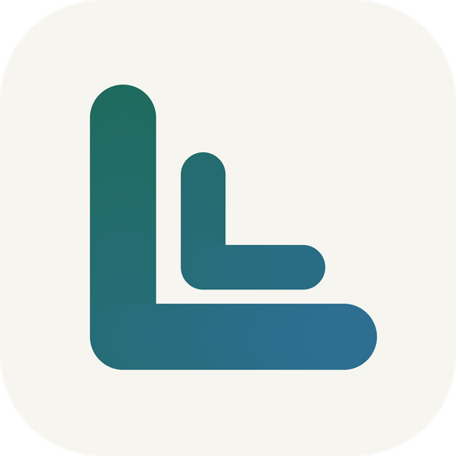
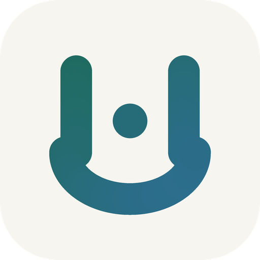

一枚大 L 为骨，一枚小 L 缩进其内 —— 同形、同构、同比例。它读作「陪伴」与「回响」：你身边永远有另一个同样的自己。等粗笔画配大圆角，圆润亲和，任何尺寸都不糊。

两个 L 采用同形嵌套：外层笔画 74、内层 50，严格同比例缩小并向右下缩进。转角全部走大圆角（stroke-linecap / linejoin 均为 round），笔画末端是半圆而非平切。
主色只用 1 个（松林青），雪峰蓝仅作为渐变终点出现，不单独承担识别。两者构成 120° 对角渐变 —— 大 L 落在青绿端、小 L 落在蓝端，让「两个个体」在颜色上也拉开一点层次。
| 用途 | 色值 | 说明 |
|---|---|---|
| 标识主色 | #1E6B5A | 松林青，渐变起点，大 L 侧 |
| 标识辅助 | #2E6E95 | 雪峰蓝，渐变终点，小 L 侧 |
| 深色底反白 | #FFFFFF → #D8EDE6 | 深色环境下改用浅色渐变 |
| 深色底背景 | #101A19 | 近黑的墨绿，不用纯黑 |
| 次级 / & 符号 | #8C9A94 | 标准字中的 & 用灰，突出两个 L |
对比度：松林青 / 纸白 ≈ 6.1:1，雪峰蓝 / 纸白 ≈ 5.2:1，均满足 WCAG AA（正文 4.5:1）。深浅两套背景均已适配。



| 项目 | 规范 |
|---|---|
| 推荐字体 | Inter SemiBold（首选）· Helvetica Neue Medium · 思源黑体 Medium · 系统 PingFang SC / 微软雅黑 |
| 字重与字距 | 字重 600，字距收紧 −3%（letter-spacing: −0.03em） |
| 大小写 | 两个 L 用大写（L），& 缩小至 70% 并降低一档颜色 |
| 横版间距 | 图标右边缘到标准字左边缘 = 图标宽度的 0.25 倍 |
| 竖版对齐 | 标准字与图标等宽居中，图标在上、文字在下 |
| 最小尺寸 | 横版整体宽 ≥ 120px；图标单独使用 ≥ 32px |

大 L 套小 L，同形同构。寓意「陪伴与回响」，两个字母一眼可辨，32px 依然清晰。综合最优。
两枚 L 背靠背并立，中间竖笔合二为一。左右完全对称，重心最稳，气质更偏「并肩而立」。

两枚 L 的底笔连成一整条圆弧，中央一点作 & 的暗示。整体像一张笑脸，亲和力最强，但图形语义也最柔。
#1E6B5A 纯色填充| 文件 | 说明 |
|---|---|
mark-primary.svg | 主标识矢量源文件（浅色底） |
mark-primary-dark.svg | 主标识深色底版本 |
lockup-horizontal.svg | 横版组合（图标 + 标准字） |
lockup-vertical.svg | 竖版组合（图标 + 标准字 + 副标语） |
variants/alt-shared-stroke.svg | 备选 · 共用中竖 |
variants/alt-arc-base.svg | 备选 · 圆弧托底 |
png/mark-transparent-512.pngpng/mark-transparent-64.png | 透明背景 PNG，直接用作小程序头像 |
png/mark-dark-512.png | 深色背景 PNG |
png/mark-32 / 64 / 128 / 512.png | 多尺寸 PNG 阶梯 |
png/lockup-horizontal.pngpng/lockup-vertical.png | 组合排版示意（透明底） |